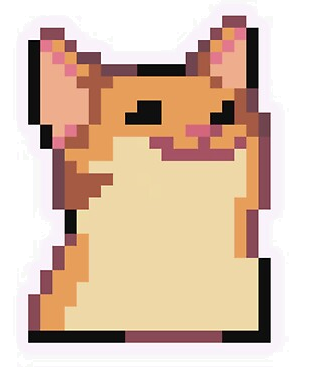

Prithvi Raj
Based in SF 🇺🇸 | From North-West UK 🇬🇧
CTO @ Rewbi | Ex-CTO @ Zettascale
Personal research

KAEM: Kolmogorov-Arnold Energy ModelGenerative models succumb to trade-offs. GANs sacrifice stability, VAEs sample quality, diffusion speed. KAEM addresses all three.
Design Principles
Representation firstAttention encodes very little inductive bias. Bespoke models win where data is limited.
Intelligence is hierarchicalGood mechanics can compensate for bad software. Good software cannot compensate for bad mechanics.
Reasoning under uncertaintyAll models are wrong. The uncaught 1% is where uncertainty quantification saves lives.
Question the defaultDiffusion destroys the structure of your target. Annealing keeps it intact.